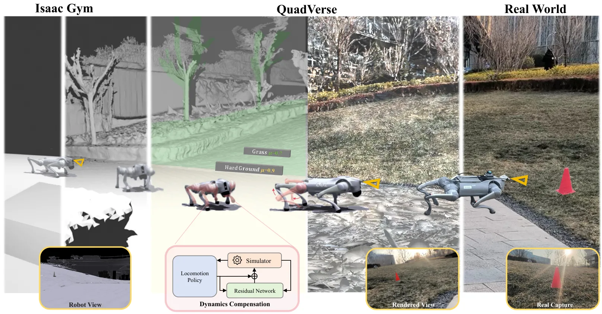
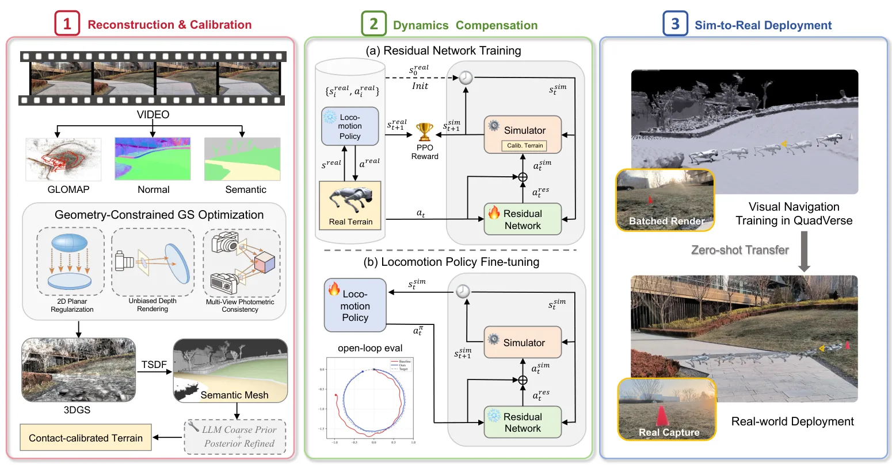
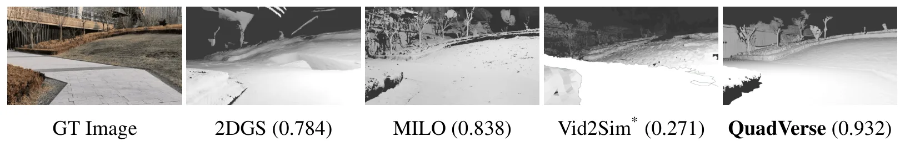
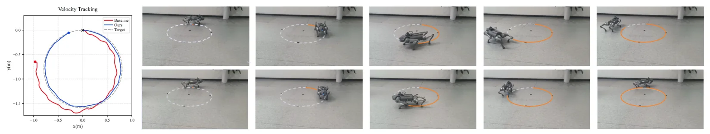
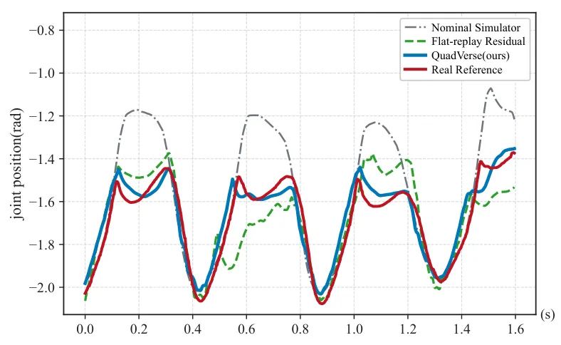
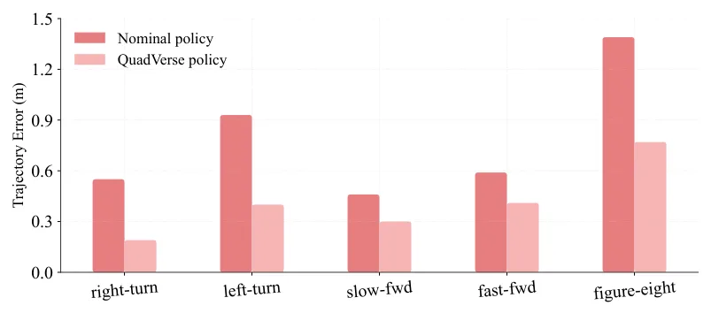
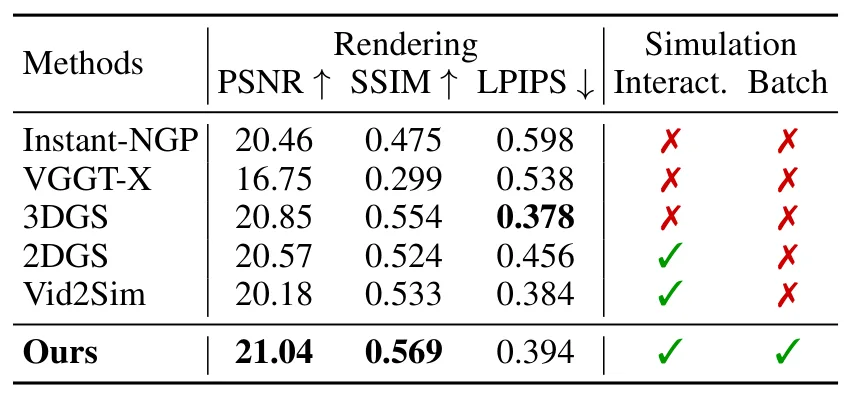
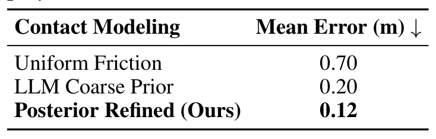
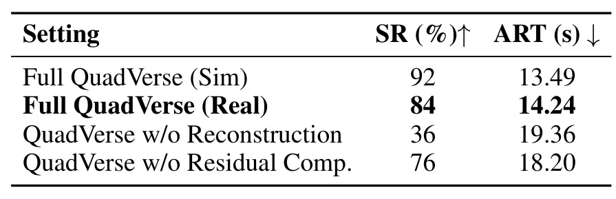

QuadVerse：对齐视觉-物理现实的四足机器人仿真集成框架QuadVerse: An Integrated Framework Aligning Visual-Physical Reality for Quadruped Simulation
偏机器人仿真与视觉导航，不是传统 SLAM/GNSS 论文，但其 3DGS 场景重建、语义网格和物理校准流程对真实场景评测有参考价值。
一句话工作总结
QuadVerse 把 RGB 视频重建的 3DGS 场景转成可渲染、可碰撞、可校准的四足机器人仿真环境。
摘要
机器人学习高度依赖仿真，但 sim-to-real gap 仍是主要瓶颈。现有方法往往分别处理视觉或动力学差距，忽略这些错配如何在机器人状态演化中累积和传播。QuadVerse 使用重建场景作为校准视觉感知、物理交互和执行器动力学的基底：先从 RGB 视频重建具有几何约束的 3DGS 场景，支持批量照片级第一视角渲染，并提取可碰撞语义网格；随后基于网格初始化空间变化的摩擦先验，并通过轨迹后验搜索进行接触校准；最后在接触校准地形上回放真实轨迹，训练 residual dynamics compensator，以降低地形接触误差与执行器非理想性之间的耦合。实验显示该框架提升了重建质量和运动跟踪，并支持零样本视觉导航策略部署。
Simulation is central to robot learning, yet the sim-to-real gap remains a major bottleneck.Existing approaches often tackle visual or dynamic gaps separately, overlooking how these individual mismatches accumulate and propagate throughout the robot's state evolution.In this paper, we introduce QuadVerse, an integrated framework that uses reconstructed scenes as a calibration substrate for aligning visual perception, physical interaction, and actuator dynamics.From captured RGB videos, we reconstruct geometry-constrained 3D Gaussian Splatting (3DGS) scenes that support batched photorealistic ego-view rendering and collision-ready semantic mesh extraction. The meshes further enable contact calibration by initializing spatially varying friction priors and refining them through trajectory-based posterior search.To address remaining actuator discrepancies, QuadVerse trains a residual dynamics compensator by replaying real-world trajectories on the contact-calibrated terrain, reducing the entanglement between terrain-induced contact errors and actuator non-idealities.Experiments show that QuadVerse improves reconstruction quality and locomotion tracking over relevant baselines.Leveraging this foundation, we demonstrate robust zero-shot visual-navigation policy deployment without task-specific real-world rollouts.
中文解读摘录
- 作者：Yuang Shi, Simone Gasparini, Géraldine Morin, Wei Tsang Ooi；类别：cs.CV / cs.MM / eess.IV；发布日期：2026-06-05；采集 score=11
- 核心问题：现有渐进式 3DGS 多采用离散 LoD 层，每层维护独立 splat 集合，容易导致误差累积、splat 冗余和质量跳变。
- 方法亮点：提出连续层级
Evolution Tree，以 wavelet-like parent-child refinement 让子节点显式修正祖先层误差，从而形成稀疏、可压缩的层间信号。 - 结果信号：论文称 splat 冗余从超过 65% 降至低于 25%，传输 payload 最高降低 2.4×，GPU VRAM 最高降低 5.5×，适合实时自适应 3DGS streaming。
- 关注价值：如果工程实现稳定，这类连续 LoD/流式表示可用于移动机器人/远程巡检中的大场景 3DGS 地图分发与带宽自适应浏览。
图表/页面预览
{kind=link}

{kind=link}

{kind=link}

{kind=link}

{kind=link}

{kind=link}

{kind=link}

{kind=link}

{kind=link}
